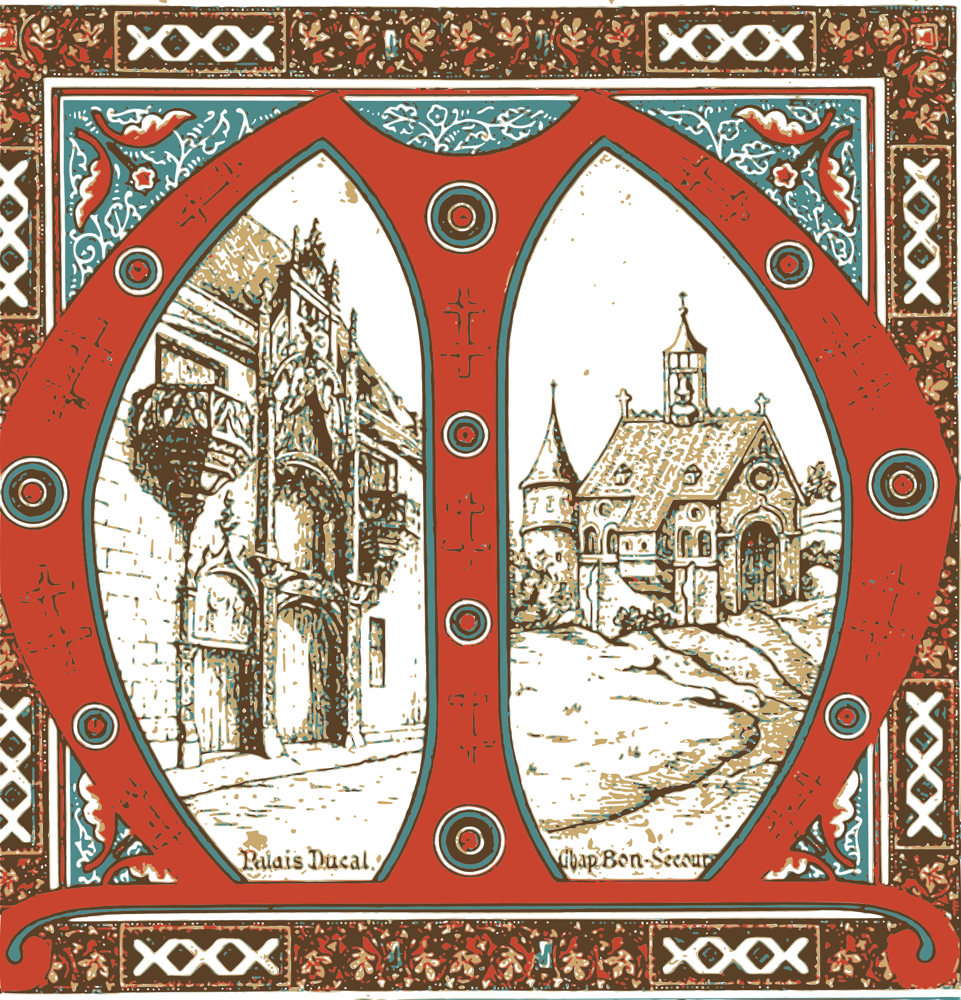
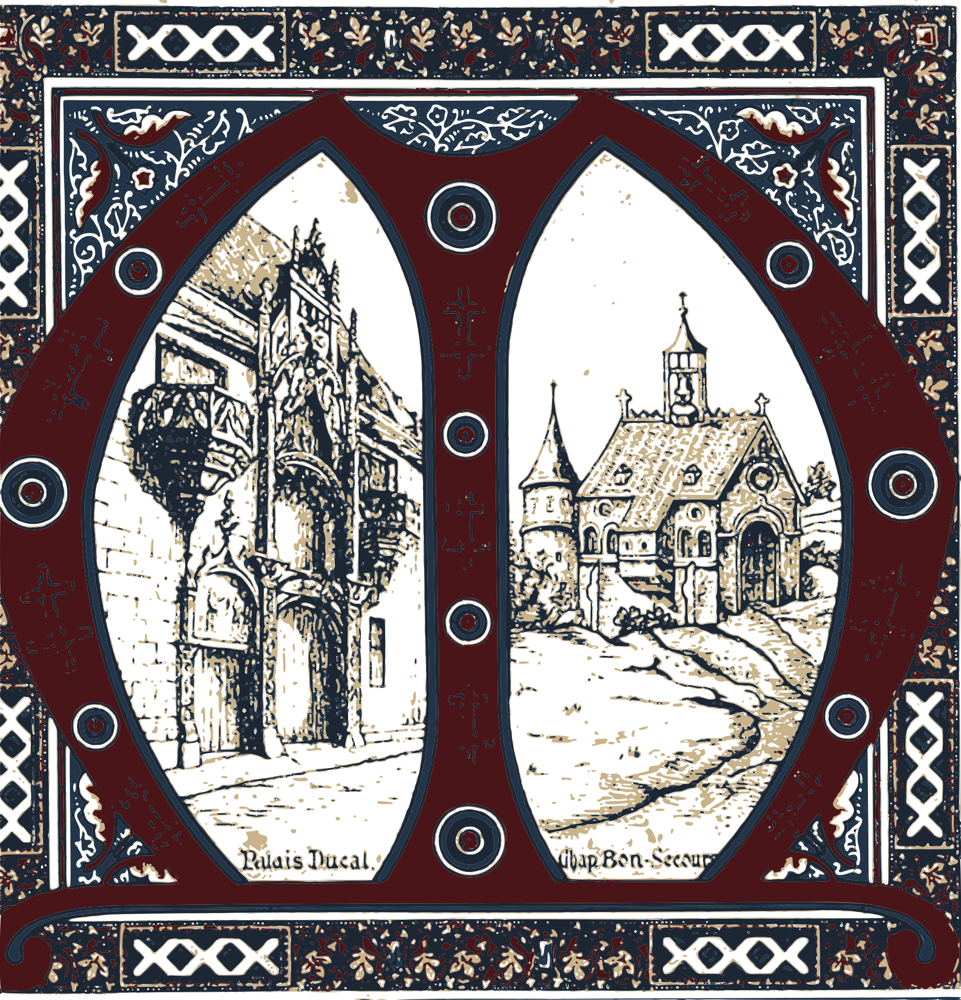

Essais : la gravure de Morey
Élévation de la façade gravée par Prosper Morey, l'architecte de la basilique (1862-1864, domaine public, Wikimedia Commons). Chaque élément est vectorisé tel quel. Il prend n'importe quelle couleur : bleu marine, blanc ou bordeaux, les trois couleurs du site.
Les éléments
Gâble détouré : sans le mur derrière.
Rosace du gâble détourée : candidate pour un petit logo.
Grande rosace détourée, avec la statue au centre.
Pinacle sur niche à statue, détouré.
Les trois gâbles détourés, avec leurs pinacles et le haut du gâble central.
Gâble du portail central, avec sa rosace et ses crochets.
Rosace du gâble et ses deux petits quadrilobes.
Portail central : gâble, voussures, tympan, vantaux et marches.
Portail latéral et sa petite rosace. Trop détaillé pour un ornement : à garder seulement comme illustration.
Fenêtre à remplage sous son gâble.
Pinacle à côté de la tour, détouré sans la tour.
Flèche et ses clochetons.
Tour et flèche entières.
Façade complète (fichier lourd : 5 Mo).
Nouvelles sources : l'orgue et les enluminures
L'orgue de Saint-Epvre tel qu'il fut gravé à l'Exposition universelle de 1867, détouré sans la tribune de l'Exposition. La lettrine, la bordure et l'enluminure viennent de la Monographie de la Basilique de Saint-Epvre (1890). Tout est dans le domaine public.
L'orgue Merklin, gravure de 1867 détourée.
Lettrine C aux chardons de Lorraine, avec un enfant de chœur de Saint-Epvre.
Bordure de la monographie, répétable en frise.


Enluminure M en calques de couleur : à gauche les couleurs d'origine, à droite les couleurs du site.
Usages possibles sur le site
Logo : la rosace du gâble à côté du nom, dans le menu.
En-tête de section : le gâble en filigrane derrière un titre.
Séparateur : les trois gâbles répétés en frise.
Fond d'une page : la façade entière, très pâle.